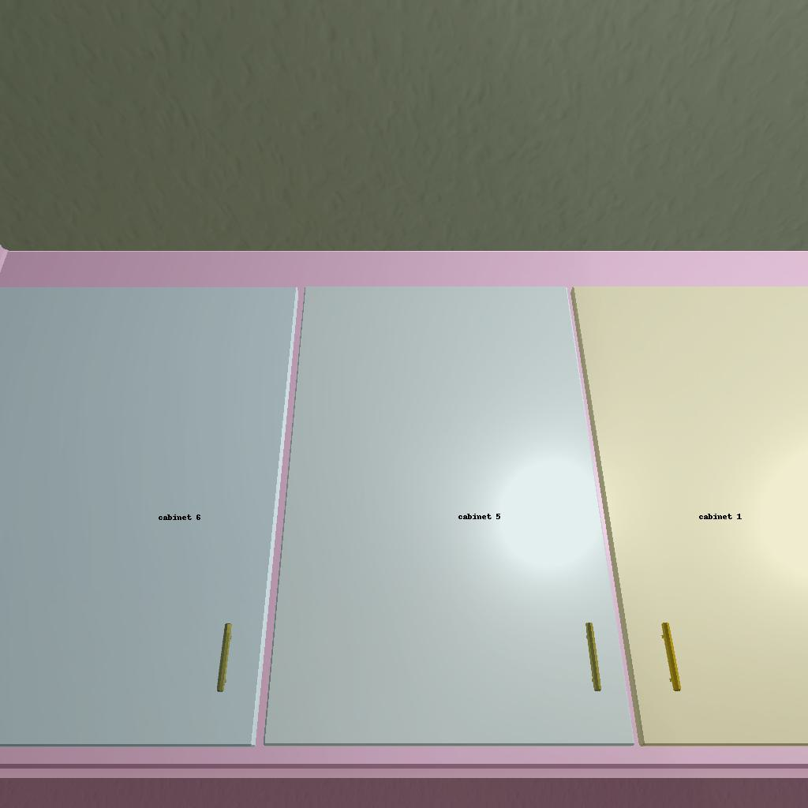

---------------------------------------------------------task: 18---------------------------------------------------------
--------------------------------------------------------------------------------------------------------------------------------------------------------------------
--------------------------------------------------------------------------------------------------------------------------------------------------------------------
Step:--------------------------------------------------------------------------15-------------------------------------------------------------------------------
----------------------------------------
VLM Prompt:
Image1:
Image2:
Image3:
**Instruction**
1. Analyze the provided image to identify all visible household objects, focusing on those relevant to the task description "put a cool pot in cabinet."
2. Use the analysis of the image and the task hint "The agent must find an object of the desired type, pick it up, go to a fridge, cool the object with the fridge, then find the correct location to place it, and put it down there. The agent does not need to use the fridge button or open the fridge to cool the object, and the agent just needs to do action that is "cool the object with the fridge"." to answer the question: what is the most reasonable action in the choices for the task description "put a cool pot in cabinet"?
4. Decide and write the answer using the template: The answer is: (i): , where i is the real number. If there is no desired object in the image, search every place based on **Initial Observation** to find the object. And if no one is exactly correct, choose a similar answer.
**Initial Observation**
You are in the middle of a room. Looking quickly around you, you can see cabinet (1-20), countertop (1-3), coffeemachine (1), toaster (1), sink (1), fridge (1), microwave (1), garbagecan (1), drawer (1-3), sinkbasin (1), stoveburner (1-4), shelf (1-3)
**Answer Choices**
(1): go to cabinet 1
(2): go to cabinet 2
(3): go to cabinet 3
(4): go to cabinet 4
(5): go to cabinet 5
(6): go to coffeemachine 1
(7): go to cabinet 7
(8): go to toaster 1
(9): go to cabinet 8
(10): go to sink 1
(11): go to fridge 1
(12): go to microwave 1
(13): go to garbagecan 1
(14): go to cabinet 9
(15): go to cabinet 10
(16): go to countertop 2
(17): go to cabinet 11
(18): go to cabinet 12
(19): go to drawer 1
(20): go to countertop 3
(21): go to drawer 2
(22): go to cabinet 13
(23): go to sinkbasin 1
(24): go to cabinet 14
(25): go to drawer 3
(26): go to stoveburner 1
(27): go to stoveburner 2
(28): go to stoveburner 3
(29): go to cabinet 15
(30): go to stoveburner 4
(31): go to cabinet 16
(32): go to cabinet 17
(33): go to cabinet 18
(34): go to cabinet 19
(35): go to cabinet 20
(36): go to shelf 1
(37): go to shelf 2
(38): go to shelf 3
(39): put pan 1 in/on countertop 1
(40): examine pan 1
(41): examine countertop 1
**Answer**
Let's think step by step by following the instructions.
----------------------------------------
----------------------------------------
Original Response:
The task description is "put a cool pot in cabinet."
Firstly, we need to identify a pot in the images. In Image2 and Image3, we can see a "pan 1" on "countertop 1," which is the closest object we can associate with a pot.
Next, according to the task hint, the agent does not need to use the fridge button or open the fridge to cool the object. It just needs to perform an action that is "cool the object with the fridge." Since the action of cooling the pot with the fridge is not explicitly given in the answer choices, we will assume this action is implicit and part of the task execution.
After cooling the pot, we need to choose a cabinet to put the pot in. From Image1, we can see "cabinet 5," "cabinet 6," and a partial view of "cabinet 1." From Image2, we can also see "cabinet 7," and from Image3, we have the same view as Image2. Since there is no direct instruction on which specific cabinet to use, we should choose the one that has been clearly identified and is closest to the pan for efficiency.
The most reasonable action would be to go to the nearest cabinet to "pan 1," which is "cabinet 6," as seen in Image2 and Image3. However, there is no explicit action to pick up the pan and cool it with the fridge before placing it in the cabinet. Since we need to choose the best option available, we will select the action to go to the cabinet and assume the cooling and picking up of the pan is understood within the context of the task.
The answer is: (7): go to cabinet 7.
----------------------------------------
----------------------------------------
>>> Refine Original VLM Response and Get Pure Action: go to cabinet 7
----------------------------------------
-----------------------------------------------------------------
Running time: 13.870594263076782 seconds
Total Money: 11.7066
-----------------------------------------------------------------
-----------------------------------------------------------------
Text Observation:You arrive at loc 8. The cabinet 7 is open. On the cabinet 7, you see a lettuce 1, a soapbottle 1, a mug 1, and a spatula 1.
-----------------------------------------------------------------
UNSUCCEED